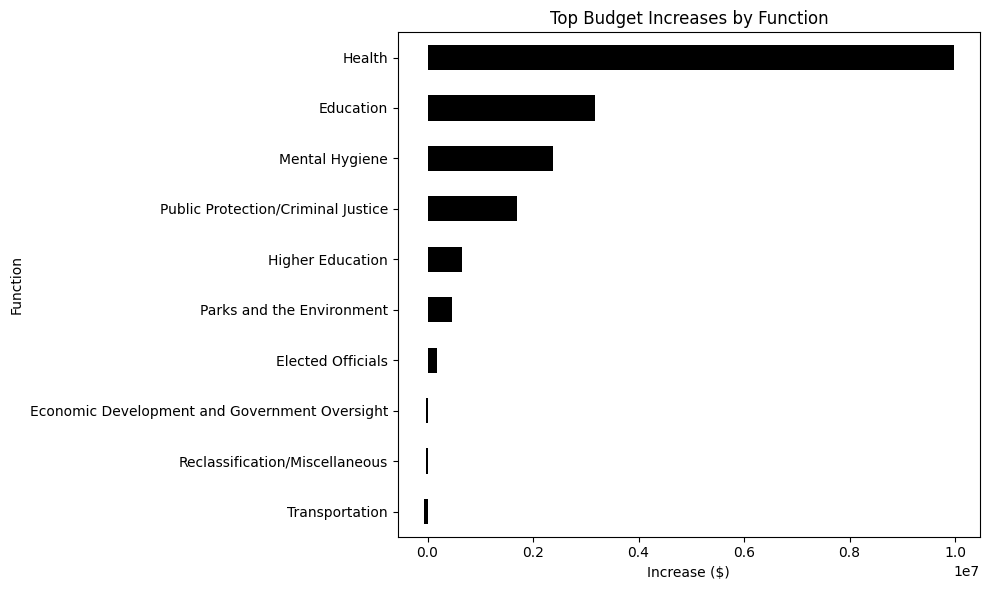
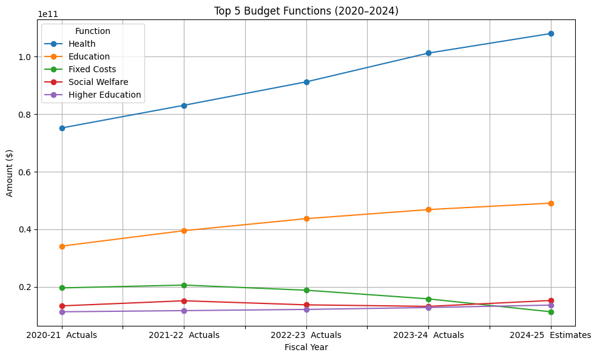
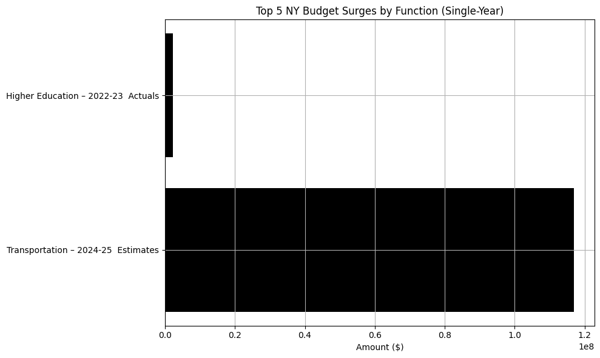
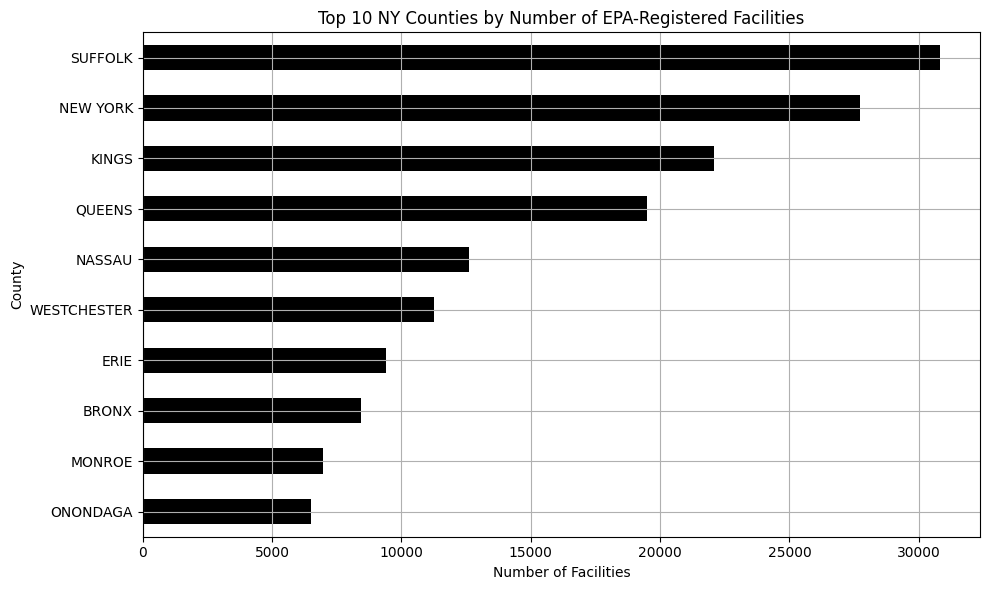

CivHub Insights is a living archive of AI-generated civic knowledge, starting with the New York State budget. These snapshots surface key trends and shifts buried in public data—empowering anyone to understand how government resources are allocated.
In the 2023–24 NY State Budget, Health saw the largest increase in funding—up nearly $10 million from the previous year..
 Insight generated by CivHub AI v0.1 Data Source: NY State Budget Raw Data (CSV)Over the past five years, Health, Education, and Social Services have consistently received the highest levels of funding in the New York State budget. This trend has remained steady despite fluctuations in other areas.
 Insight generated by CivHub AI v0.1In a surprising shift, the NY State Budget shows massive single-year spikes in funding for Higher Education and Transportation.
According to the data, several budget lines in these categories saw funding jump from $0 to over $100 million in a single year—an “infinite” increase. CivHub flagged these anomalies as part of an ongoing audit of outlier spending patterns.
 Insight generated by CivHub AI v0.1According to EPA data, Kings, Queens, and New York counties—home to Brooklyn, Queens, and Manhattan—have the highest number of registered environmental facilities in the state. These include air quality monitors, hazardous waste sites, and industrial polluters tracked by federal regulators.
 Insight generated by CivHub AI v0.1